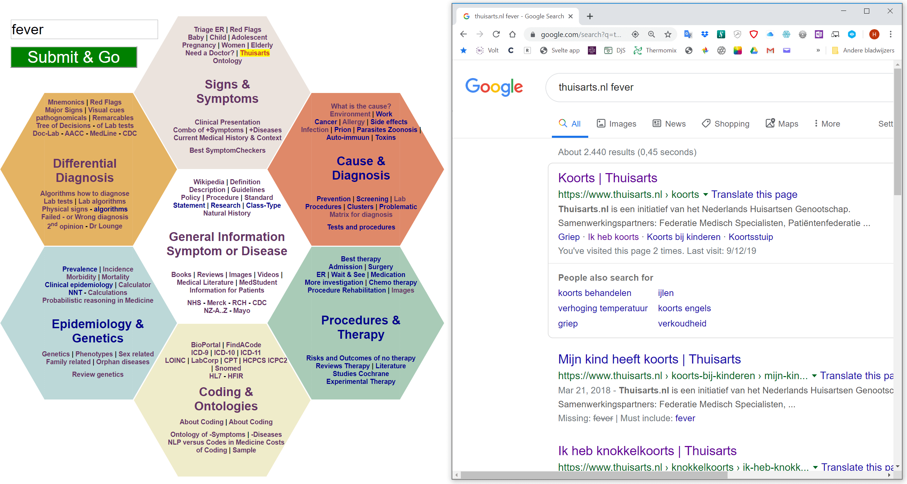

Without using the text input, you may consider to use these good sites:
Refdesk
Libraries: NCBI | PubMed |
HONselect
Medications:
RxList | Drug | Dose
| Side effects | Pil identifyer
Skin disease images: Skin diseases | Skin atlas
Symptom checkers: Skin diseases | Skin atlas
Lists A-Z:
Medical Specialties
|
Orphan Diseases
|
Diseases
|
Syndromes
|
CDC
| RCH Children
MG Second opinion
Johns Hopkins
Tip for smartest use:
Drag the second screen upfront.
View Video Explanation

Instruction for use:
Input the symptom or disease and submit. You will discover that the input will be used in the 100 search strings. By only once typing for example 'fever and diarrhea' or 'hereditary mediterranean fever' you can quickly scan the medical field for detailed information about the symptom or the disease.